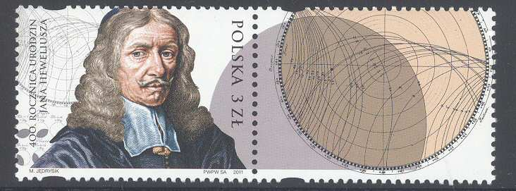

Szkoła Podstawowa nr 2
im. Jana Heweliusza w Żukowie

PATRON
Od września 2002 r. w naszej szkole trwały przygotowania do wyboru patrona. Wsród ustalonych kryteriów doboru kandydata uwzględniany był fakt, iż musi być to Pomorzanin z pochodzenia, osoba nieżyjaca, wzór do naśladowania dla innych, a także postać, która wniosła wkład w rozwój regionu pomorskiego, Polski lub Europy. W pracę nad wyborem kandydata zaangażowali się wszyscy uczniowie i ich wychowawcy. Zmobilizowało to młodzież do szukania informacji w książkach, podręcznikach, prasie oraz w Internecie. Każda z klas miała okazję zaprezentować na apelu wybraną przez siebie sylwetkę. Okazało się, że po wyborach na poziomie klas równoległych, po wyborach ogólnoszkolnych zwyciężył Jan Heweliusz. Udział w wyborach patrona szkoły brała udział także Rada Pedagogiczna i Rada Rodziców. Całe przedsięwzięcie zakończyło się uroczystą wieczornicą, na której została przybliżona postać tego wielkiego astronoma.

JAN HEWELIUSZ
Jan Heweliusz urodził się 28 stycznia 1611 roku w Gdańsku w rodzinie Abrahama i Korduli z domu Hecker. Został ochrzczony w kościele parafii św. Jana. Miał pięć sióstr. Ojciec Jana Heweliusza był bogatym browarnikiem i kupcem. Zadbał o wszechstronną edukację swego syna, który był uczniem szkoły parafialnej, Gimnazjum Akademickiego i studentem prawa na holenderskim uniwersytecie w Lejdzie. Heweliusz interesował się wieloma dziedzinami nauki: matematyką, astronomią, mechaniką, optyką, prawem, malarstwem i sztuką. Później zdolności plastyczne wykorzystał kreśląc mapę nieba. Po powrocie do Gdańska przejął po chorym ojcu rodzinny browar i zaczął udzielać się w społeczności miejskiej. Był członkiem rady parafialnej przy kościele św. Katarzyny, ławnikiem, rajcą Starego i Głównego Miasta, którą to godność piastował przez 36 lat. W 1635 roku Heweliusz ożenił się z Katarzyną Rebeschke. Małżonkowie nie mieli dzieci. Pierwsza żona Jana Heweliusza zmarła w 1662 roku. Drugą żoną astronoma została Elżbieta Koopman, z którą miał trzy córki i jednego syna. Obie żony pomagały mu w prowadzeniu domu, browaru i działalności naukowej. Data 1.VI. 1639 roku była przełomowa w życiu Jana Heweliusza. Za namową swego dawnego nauczyciela Piotra Krügera przeprowadził dokładną obserwację zaćmienia słońca i rozpoczął systematyczne prace w dziedzinie astronomii, które trwały nieprzerwanie aż do jego śmierci. W 1641 roku Heweliusz zbudował swoje pierwsze obserwatorium astronomiczne przy ulicy Korzennej 53/55, które w następnych latach rozbudowywał. Sam wykonywał większość przyrządów do badań. Skonstruował zegar wahadłowy, peryskop, udoskonalił śrubę mikrometryczną i zbudował olbrzymią lunetę, największą w owym czasie na naszym kontynencie. Zgromadził wielkie zbiory książek, zorganizował własną drukarnię i warsztat miedziorytniczy. Ten największy i najlepiej wyposażony w Europie w owym czasie ośrodek badań ściągał licznych uczonych i był żywym centrum wymiany myśli. Obserwatorium odwiedzali królowie polscy-Jan Kazimierz i Jan III Sobieski, którzy wspomagali Heweliusza finansowo i wspierali jego prace astronomiczne. Działalność naukowa przyniosła mu sławę i rozgłos w całej ówczesnej Europie. Heweliusz był autorem około 20 wielkich dzieł. Opracował pierwszą topografię Księżyca; historię i opis wszystkich znanych komet, w tym 6 przez siebie odkrytych; historię astronomii ze szczegółowym opisem swych przyrządów oraz kilka tomów codziennych obserwacji. Ostatnie , wydane w 1690 roku dzieło , zawierało wspaniały atlas 54 gwiazdozbiorów, wśród których było 12 konstelacji po raz pierwszy opisanych przez Heweliusza. Jedną z nich, gwiazdozbiór składających się z 7 gwiazd , nazwał "Tarczą Sobieskiego" na cześć swego królewskiego mecenasa Jana III. Jan Heweliusz był jednym z najwybitniejszych astronomów XVII wieku, godnym następcą Mikołaja Kopernika. W uznaniu zasług na polu astronomii w dniu 30 marca 1664 roku został członkiem Królewskiego Towarzystwa Naukowego w Londynie-Royal Society. Heweliusz, choć pochodził z mieszczańskiej rodziny niemieckiej całe życie wykazywał wielkie przywiązanie do królów polskich i Polski, co znalazło swe odzwierciedlenie w tytule szlacheckim nadanym mu przez króla Jana Kazimierza. Jan Heweliusz zmarł w dzień swoich 76 urodzin, 28 stycznia 1687 roku w Gdańsku, w mieście, które ukochał, w którym pracował, którego stał się chlubą i które do dziś pamięta jego działalność społeczną i naukową oddając mu należny hołd. Postać wielkiego astronoma jako patrona wzbogaciła zakres działań edukacyjno-wychowawczych szkoły. Jan Heweliusz jako patron jest dla nas symbolem przekraczania barier i stereotypów w jednoczącej się Europie. Uczy, że szukanie podobieństw, tego co nas łączy, jest cenniejsze, od podkreślania różnic i odrębności. Od 1 czerwca 2004 roku dzień ten jest Świętem Szkoły.